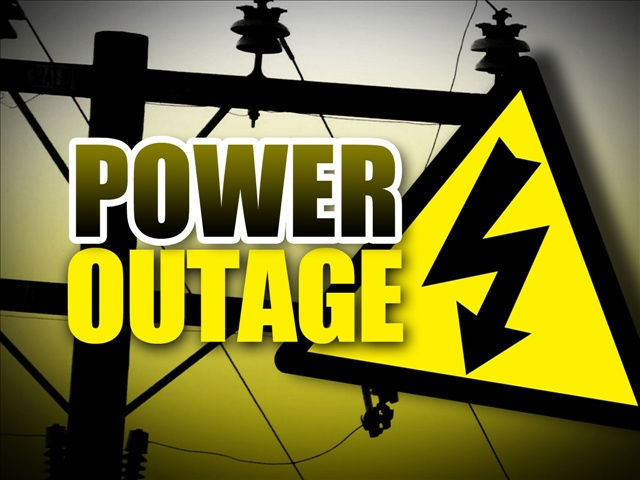

Do Solar Panels Work During a Power Outage?

It is the most common misconception in the renewable energy world: "If I have solar panels, my lights will stay on when the neighborhood goes dark." Unfortunately, for the vast majority of homeowners in the US, this is not true. If the grid goes down, your solar panels will automatically shut off.
Why Grid-Tied Systems Shut Down During Blackouts
Over 95% of residential solar installations in the United States are grid-tied. This means your system is directly connected to the local utility grid to take advantage of Net Metering.
By law, when a power outage occurs, your solar inverter must instantly detect the drop in voltage and shut down your system. Why? Safety. If your panels continued to produce electricity and push it back into the grid, it could electrocute the utility workers who are trying to fix the downed power lines.
How to Keep the Lights On: The Battery Solution
If you want energy resilience during hurricanes, winter storms, or rolling blackouts, you need to decouple your home from the grid temporarily. The only way to do this is by installing a solar battery storage system (like the Tesla Powerwall 3, Enphase IQ Battery, or FranklinWH).
When the grid fails, a smart switch (often called a gateway or backup interface) instantly physically disconnects your house from the utility lines. Your panels will then continue to generate power, sending it directly to your battery, which in turn powers your home's essential loads.
| System Type | Does it work during an outage? | Cost Impact |
|---|---|---|
| Solar Panels Only (Grid-Tied) | No. System shuts down immediately. | Standard installation cost. |
| Solar + Battery Storage | Yes. Keeps essential appliances running. | Adds $10,000 - $15,000 to total cost. |
| Fully Off-Grid System | Yes. 100% independent of utility outages. | Very expensive. Requires massive batteries. |
Are Solar Batteries Eligible for the Tax Credit?
Yes! Under the Inflation Reduction Act of 2022, standalone battery storage systems with a capacity of at least 3 kilowatt-hours (kWh) qualify for the 30% Federal Solar Tax Credit. This applies whether you install the battery at the same time as your panels or add it to an existing system years later.